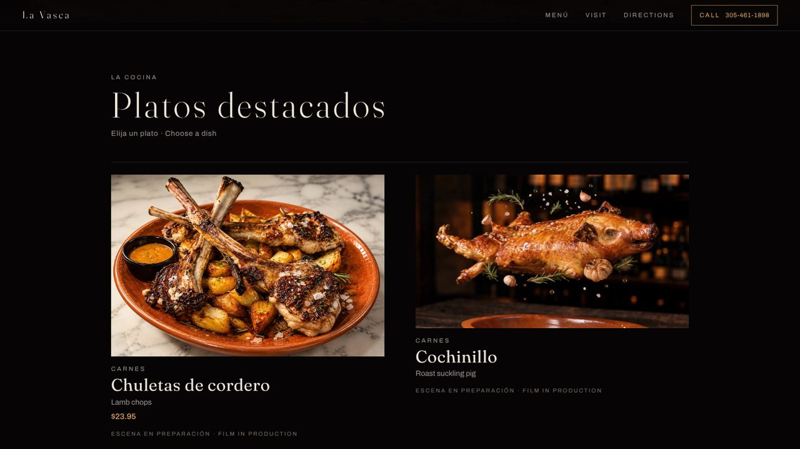
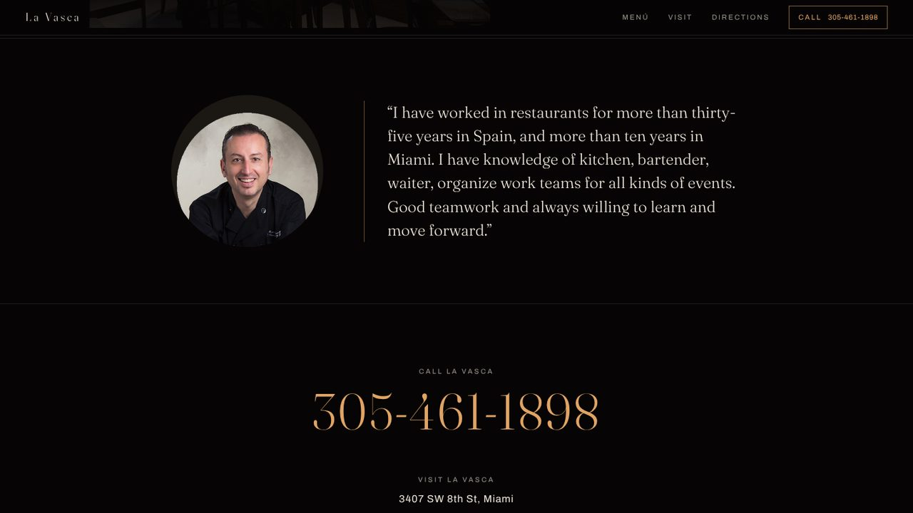
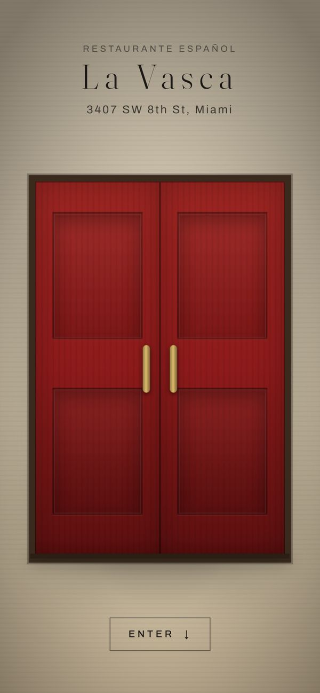
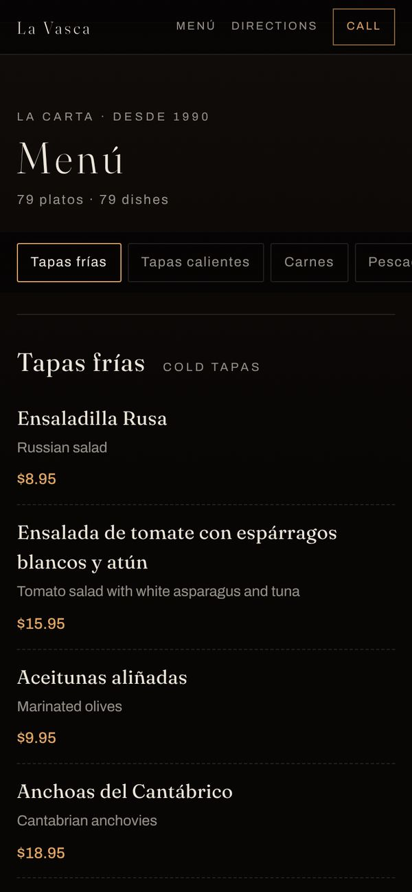

The entrance
Walking into La Vasca is the whole pitch, so the site starts at the door. Scroll and the red doors open, the camera pushes through, and the first thing you meet inside is the signature dish.
The signature dish
The film is tied to the scroll: down advances it, up rewinds it. It never plays on its own, so the visitor sets the pace.


The chef
His portrait and his own words, exactly as he gave them. Call, directions and the store stay one tap away on every screen.


On a phone
Where most of their customers will see it: the door, the dish and the menu, one thumb away.
What we made
- The website, designed and built from scratch.
- The door opening and the scroll-driven dish films.
- The full menu, typed up in both languages.
- Featured dishes with their own films and stills.
- The chef's portrait and words.
- Call, directions and the store on every screen.